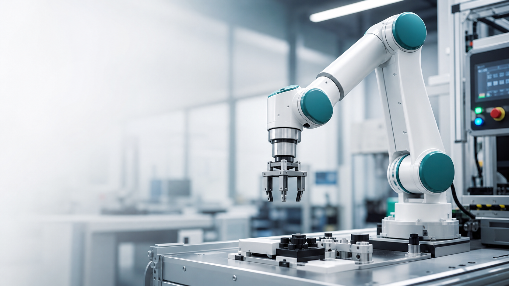
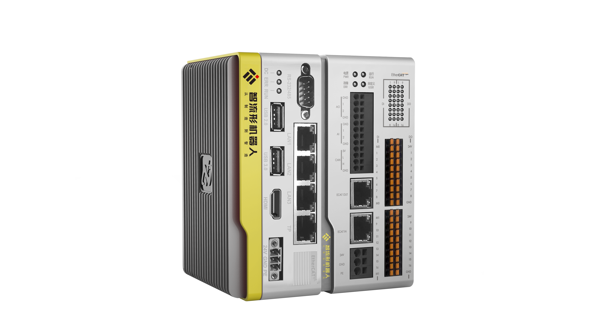
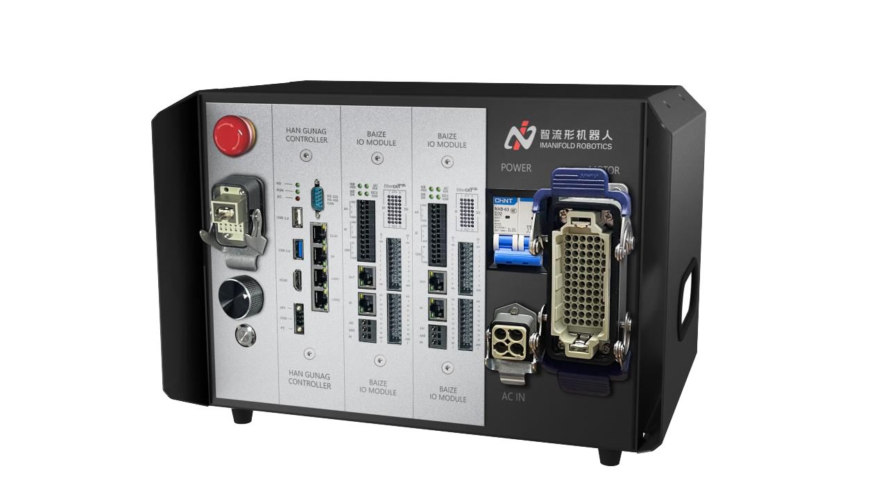
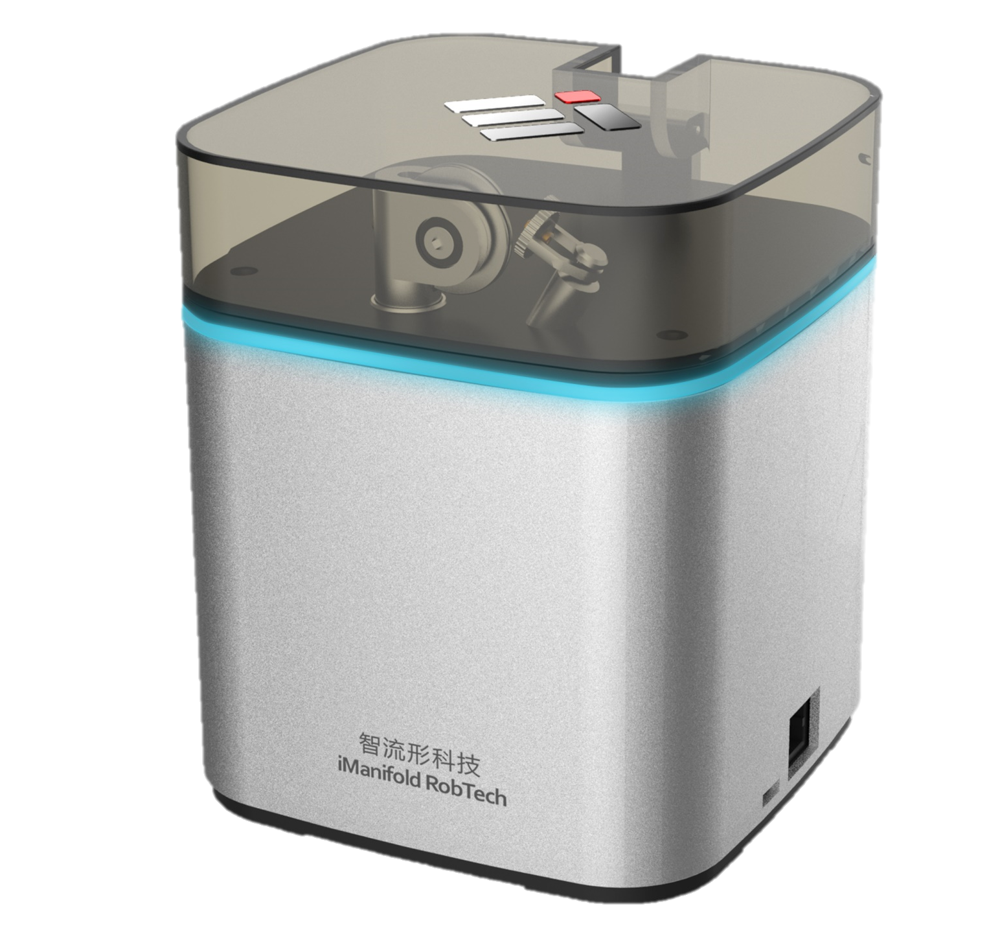
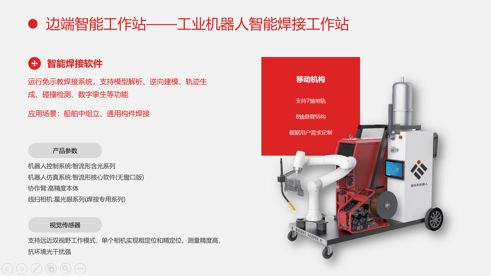

ICRT · SMART WELDING
Core products and solutions for smarter manufacturing.
ICRT brings together robot controllers, edge computing, calibration tools and smart welding workstations for welding, grinding, material handling, footwear production and complex automation tasks.
About ICRT
Robot control at the heart of connected manufacturing.
For industrial robot control, smart welding, offline programming and process automation, ICRT combines controllers, teach pendants, integrated drive and control units, 3D vision, edge computing and application software into project solutions.
Products
Controllers, calibration tools, edge computing and smart workstations.
Product images are for reference. Please contact us to confirm models, performance specifications and delivery scope.

Control systemsHanguang Robot Controller
An EtherCAT controller for robot motion control. Contact us to discuss site interfaces and process requirements.
- High-performance CPU
- POE kinematics and dynamics algorithms
- Compatibility with multiple industrial fieldbuses

Integrated drive & controlChunjun Integrated Drive & Control
Combines robot control, multi-axis servo drives, digital and analog I/O, PWM outputs and auxiliary interfaces.
- Robot model and axis count confirmed per project
- I/O and interfaces matched to site requirements
- Configuration and technical information available by email

Automatic calibrationCaliCube Calibration Tool
A robot tool-coordinate calibration solution. We help confirm compatibility with your robot, installation environment and process requirements.
- Tool-coordinate calibration
- Measurement range and accuracy confirmed for the configuration
- Compatibility confirmed for the robot model
Applications
Project solutions built around control, edge computing and application software.
Smart welding platform
Offline programming, remote control, equipment connectivity, reporting and alerts.
Robot offline programming
Robot, workcell and production-line simulation, with collision checks and path optimization.
Footwear automation
3D vision and offline programming for path extraction, process-data management and wear compensation.
Robotic welding workstation
For shipbuilding subassemblies and general fabrication, with easier programming and improved process consistency.
Welding Workstation
Intelligent workstations for complex welding environments.
A welding solution with model parsing, reverse modeling, path generation, collision checks and digital-twin functions for shipbuilding subassemblies and general fabrication.

Technology
From motion control to processes, from equipment to platforms.
ICRT builds a modular product offering around controllers, teach pendants, edge computing and offline programming, supporting integration for your processes, equipment and production lines.
RT-Linux
Real-time control and EtherCAT architecture
POE Algorithm
Kinematics, dynamics and velocity planning
Edge Platform
Offline programming, remote control and production reports
3D Vision
Recognition, path extraction and error correction
Contact
Share your process requirements. Discuss products and solutions.
Contact us about control systems, calibration, offline programming, smart welding, footwear grinding or other robotic applications.
ICRT Smart Welding
Product and solution inquiries
davidzh0278@sina.com